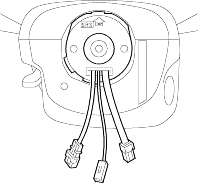
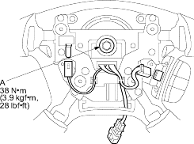

- Install the steering column covers.
- If necessary, centre the cable reel. (New replacement cable reels come centred.) Do this by first rotating the cable reel clockwise until it stops.
Then rotate it counter-clockwise (approximately 2 1/2 turns) until the arrow mark on the cable reel label points straight up.

- Align the projections on the cable reel with the holes on the steering wheel, and install the steering wheel with a new steering wheel bolt (A).

- Install the driver's airbag (see page 23-166).
- Reconnect the battery negative cable.
- After installing the cable reel, confirm proper system operation:
- Turn the ignition switch ON (II); the SRS indicator light should come on for about 6 seconds and then go off.
- After the SRS indicator light has turned off, turn the steering wheel fully left and right to confirm the SRS indicator light does not come on.
- Make sure the horn button works.
- Enter the anti-theft code for the radio, then enter the customer's radio station presets.